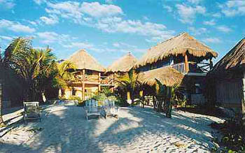

Tulum |
 |
29? 30?-Sept-00: Cabañas La Conchita Okay, it's getting dull. I'm eager for whole wheat bread, strong coffee, clean clothes and a dinner free of mosquito visitation. Sundown brings the ceaseless application of bug spray-- have abandoned the good-intentioned, hippy hemp- and citronella-oil concoction for the evil-multinational-corporation-produced, ecosystem-ravaging aerosol of 40% DEET. Sights: handwritten signs. The ones in medieval blackletter and complicated reflexive verb constructions declare ownership of a few hectares; the ones in Ben Shahn-looking block print and run-on noun phrases advertise cabañas and fresh coconuts. Smells: a surprising number that are unpleasant. The drains of showers, sinks and toilets seem to converge not so far beneath the floor. Odor of mosquito coil smoke. Odd aroma of clothes washed in hotel sinks and dried by the breeze off the Caribbean. Sounds: chirp of a gecko from the thatch roof, a birdlike trill that neither startles nor annoys-- the trachea producing it must be microscopic, the whole lizard about the size and shape of a kazoo and the color of a Pink Pearl eraser. At seven p.m. the generator starts up and so do the beer coolers at the tienda, the dining room lights at the Maya Tulum restaurant and the radio at the reception area at La Conchita. This radio plays English-language pop music and attracts three or four giggling Spanish-speaking people. At ten p.m. the generator shuts off and so does the radio. One would assume that I would so welcome this recovery of silence I would breathlessly await the arrival of the blessed hour, but I haven't managed to stay awake that long. |